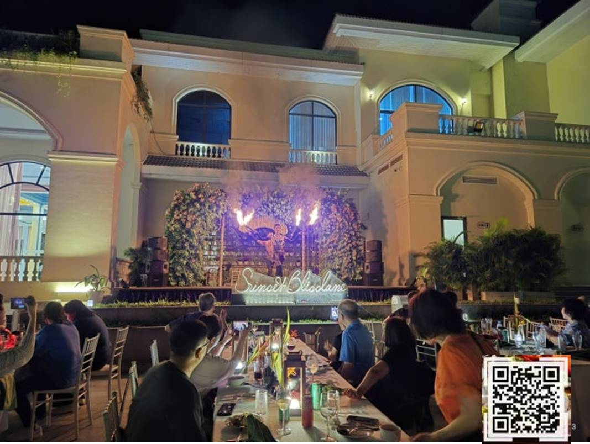
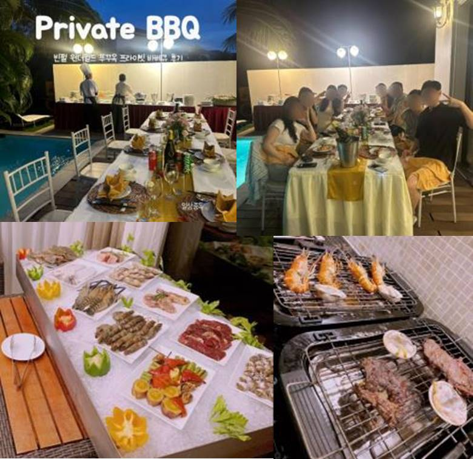
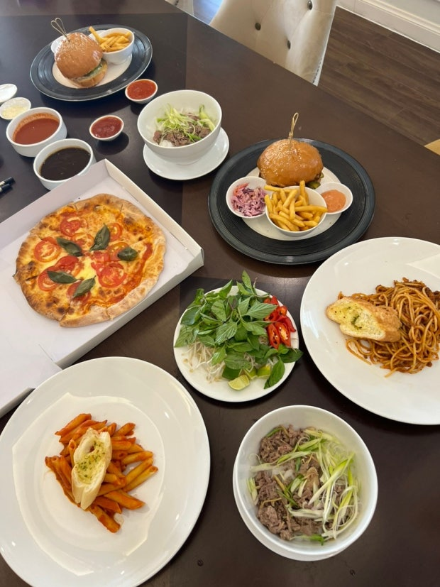
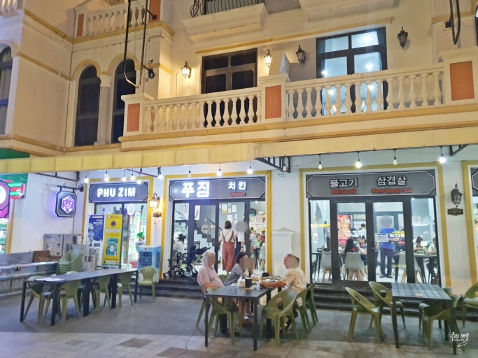
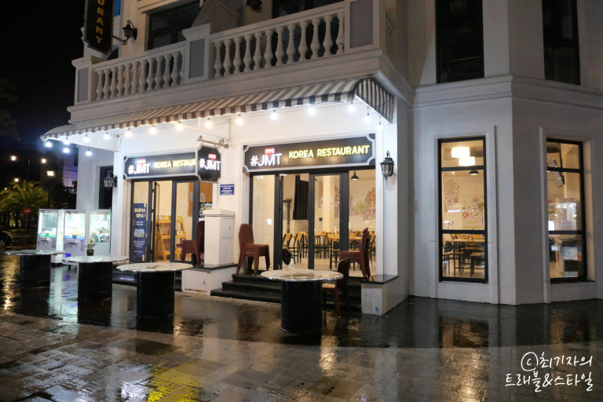
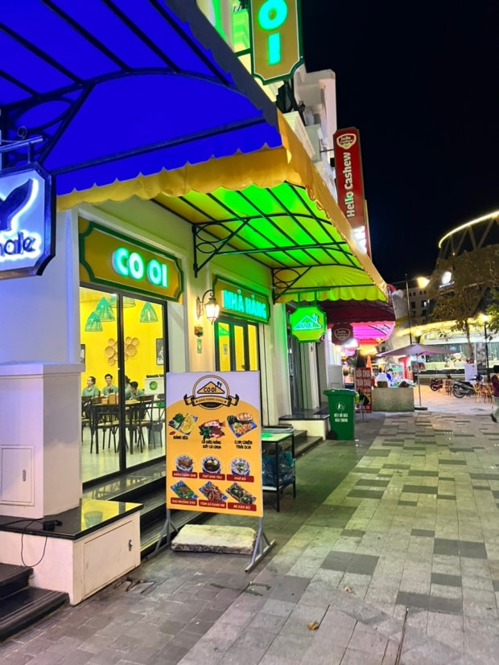
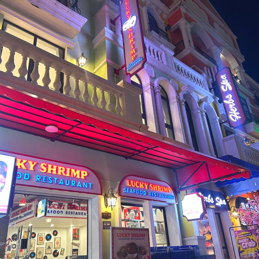
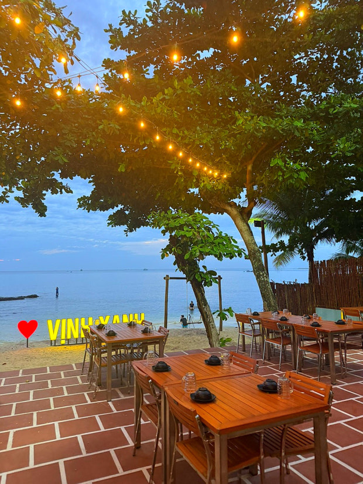
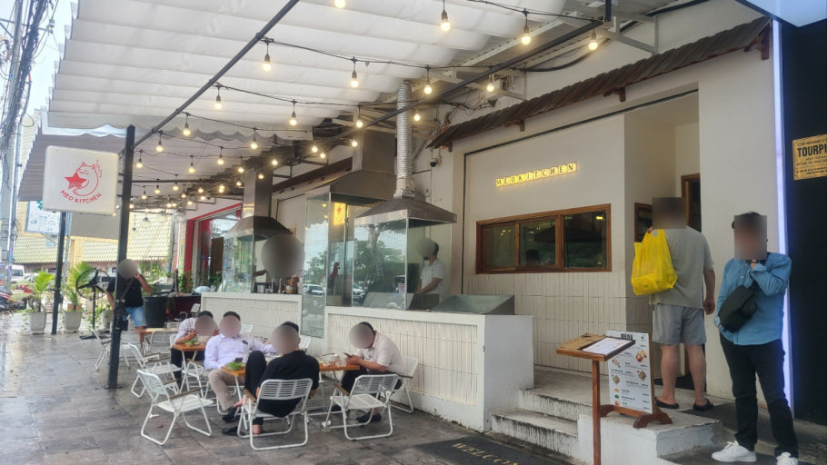

- 성인 6만원, 아동 3만원
- 8/22 토요일, 공항에서 리조트에 도착해서 저녁 식사로 생각하고 있어요
- 할인 받을 수 있을거라 가격은 다시 조정될 듯 해요
- 주류는 추가 요금이 있는 것 같아요.
- 뷔페에 불쑈 해준다고 하니까, 여행 시작할 때 하게되면, 휴양지 온 느낌이 들 것 같아서 도착하는 날로 잡았어요
※ 사진의 QR코드로 이동하시면, 빈펄 리조트 F&B 정보가 나와요

- 성인 6만원, 아동 4만원
- 8/24 월요일 저녁에 이용할 계획입니다.
- 가격은 넉넉히 잡아서 성인 6만원, 아동 4만원인데, 30% 할인해준다는 프로모션이 있어서, 빈펄에 메일 보내놨습니다.ㅎㅎ
- 육류, 해산물 등 풀빌라 숙소에 뷔페처럼 열어주고, 구워주고 서빙까지 해준다니까,,, 여행가서나 이렇게 한번 놀아봐야지 않겠습니까유
- 리조트 내 주류는 가격이 있는 편이라, 주류나 음료는 숙소에 좀 쟁여 놓으면 좋을 듯 합니다

- 5인 가족이 한끼에 3~5만원 정도면 충분히 먹는다고 하네요.
- 주문하면 바로바로 오는 편이라 저녁 식사 필요할 때, 주문해서 먹으면 좋을 것 같네요
- 주류는 비싼 편이라, 마트에서 장 봐와서 숙소 냉장고에 쟁여두고 음식만 시켜 먹으면 좋을 것 같아요!

- 그랜드월드에 위치하고 있어서, 숙소에 있다가 한식 생각나면 편하게 가보면 될 것 같아요

- 그랜드월드에 위치하고 있어서, 숙소에 있다가 한식 생각나면 편하게 가보면 될 것 같아요

- 그랜드월드에 위치하고 있어서, 숙소에 있다가 편하게 가보면 될 것 같아요
- 베트남 음식 땡길 때 가보면 좋을 듯 합니다 ㅎㅎ

- 그랜드월드에 위치하고 있어서, 숙소에 있다가 편하게 가보면 될 것 같아요
- 해산물 음식이라서 술 안주하기도 좋고, 분수쇼가 보이는 가게라서 2층에서 분수쇼를 관람했다는 사람도 있더라구여 ㅎㅎ

- 8/25 일요일, 호핑투어 마치고 방문할 계획입니다.
- 빈산이 음식이 좋다고 꼭 방문해야 한다는 블로그 글들을 많이 봤어요
- 그런데, 안타깝게도 관광지화 되어서 비싸고 양이 적어서 비추라는 글이 최근에 너무 많이 올라와서 당황스러운 곳입니다.

- 동준이 형님의 추천ㅎㅎ
- 가격도 적절하고 분위기도 적절한데, 미리 예약은 해야될 것 같은 느낌입니다
- 웨이팅도 있다니까 진짜 예약은 필수일 것 같네요!!